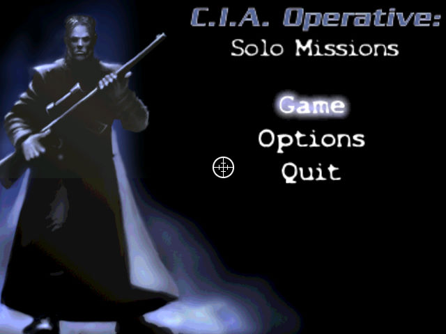
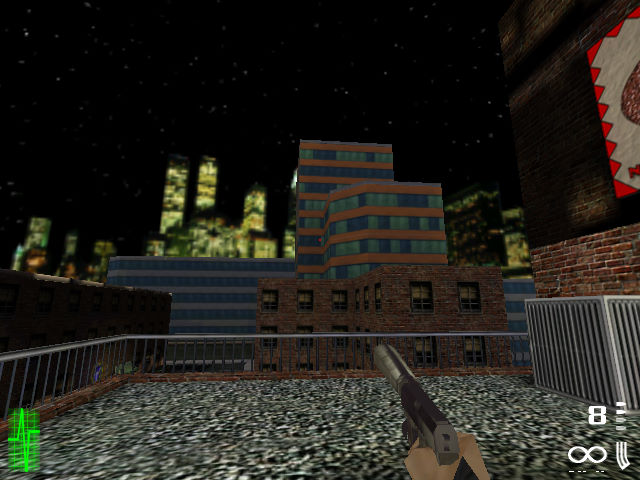

名稱：CIA孤膽英雄／CIA特工：單人任務 (CIA Operative: Solo Missions，英文版) 簡介：Trainwreck 2001年出品的第一人稱射擊遊戲，由ValuSoft代理發行 [待補]。   保護：光碟 備註：VirtualBox需安裝nGlide，並在Video Setup裡勾選Check Voodoo1選項，但執行起來 並不是很順暢，虛擬機還是建議使用VMware。

